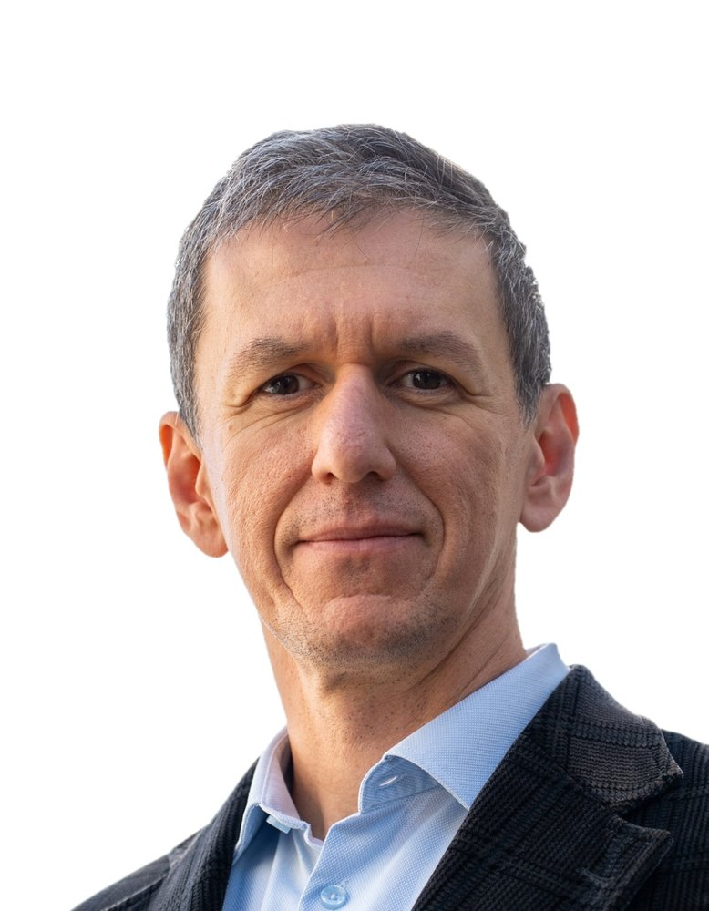

About

Michal Kazimierz Budzik
Professor · Head of Section, Mechanics and Materials
Department of Mechanical and Production Engineering, Aarhus University
I am a Professor and Head of the Mechanics and Materials Section at the Department of Mechanical and Production Engineering, Aarhus University. I lead the Lightweight Materials and Structures (LITE) group and chair the department's PhD programme.
My research concerns composite materials and structures in the broad sense, at the meeting point of three fields: fibre and laminated composites, adhesive bonding and mechanical metamaterials. I develop theoretical, numerical and experimental methods to design materials that are tough, lightweight and sustainable. Lately I have been bringing in ideas from topology, statistical physics and data science.
My path started in Gdańsk and Bordeaux, where I did a double PhD. I then worked at CNRS and at the French Space Agency (CNES), where I did fatigue and reliability work for the Ariane 6 programme. I joined Aarhus in 2012, where I founded the Laboratory for Mechanics and Physics of Solids (LAMPS) and co-founded the AU Makerspace. In 2022–23 I spent a year at the LEGO Group as R&D Manager for SLS additive manufacturing materials.
Roles
- Head of Section, Mechanics and Materials, AU MPE
- Chair, AU MPE PhD Programme
- Steering Committee & Space Exploration Theme Leader, AU SpaCe
- Editorial Board, The Journal of Adhesion
- Founder, LAMPS laboratory · Co-founder, AU Makerspace
Languages: Polish · English · French · Danish · German
Career
- Sep 2026–
Professor & Head of Section, Mechanics and Materials, Aarhus University; Chair of AU MPE PhD Programme
- 2022–23
R&D Manager, Materials, SLS Additive Manufacturing, The LEGO Group
- 2021
Invited Professor, University of Pennsylvania (USA)
- 2018–26
Associate Professor, Aarhus University; PI of the LITE group; founder of LAMPS
- 2019
Invited Professor, ENSAM ParisTech (France)
- 2014–18
Assistant Professor, Aarhus University
- 2012–14
Postdoctoral fellow, Aarhus University
- 2011–12
Postdoctoral fellow, French Space Agency (CNES)
- 2010–11
Postdoctoral fellow, CNRS, France
- 2010
PhD in Materials Engineering (Gdańsk University of Technology) and PhD in Mechanical Engineering (University of Bordeaux)
Teaching
Courses I currently teach at Aarhus University:
- Design of Composite Structures
- Mechanical Metamaterials
- Materials Science
Recognition
- VILLUM Experiment grants, 2022 and 2025
- Zwick Science Award and Paul Roell Medal, 2012
In the media
- 2025Breaking the pattern: how disorder toughens materialsPenn Engineering Today ↗
- 2025Controlled disorder enhances resistance in 3D-printed mechanical metamaterials3D Printing Industry ↗
- 2024New flywheels to store unprecedented amounts of energyAarhus University ↗
- 2023Art-inspired tape is both strong and weakAPS Physics ↗
- 2021How to cut into a material more smoothlyAPS Physics ↗
Contact
For collaborations, student projects, industry partnerships or speaking invitations: